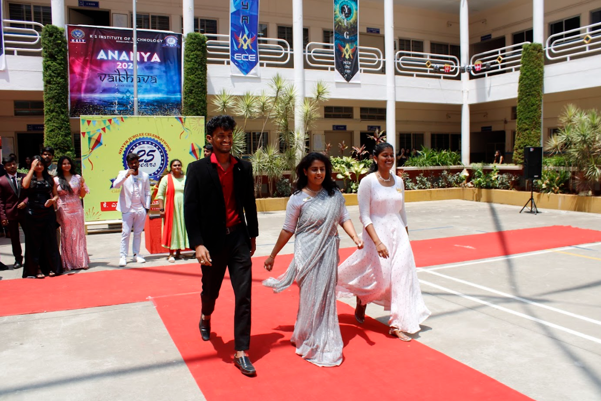
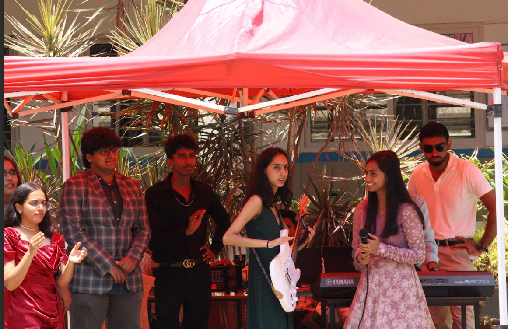
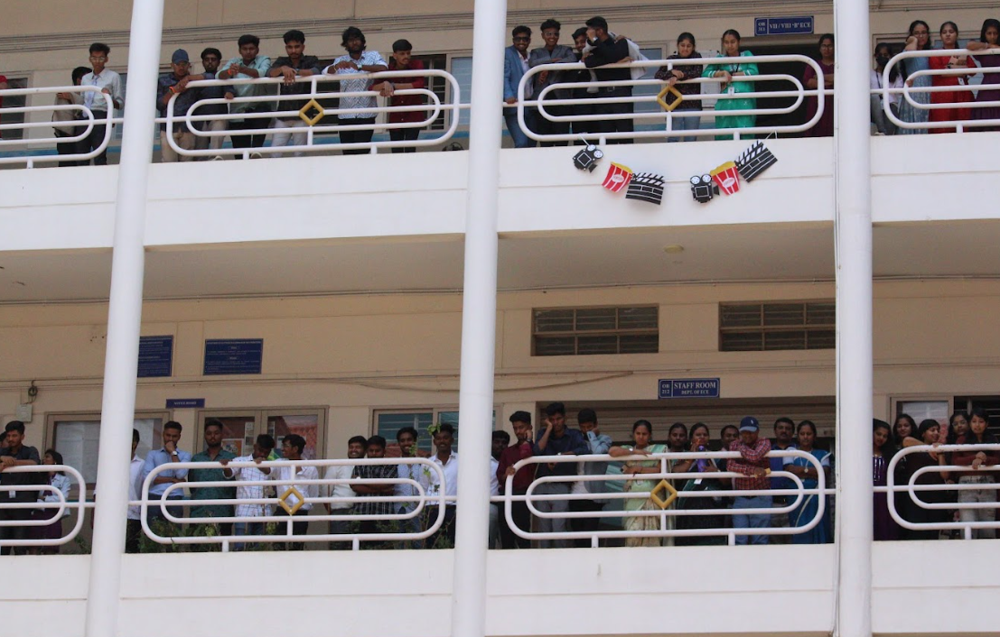

TEACHER'S WALK
It's Met Gala day, but with a twist this time, it's our beloved teachers strutting down the ramp! They've swapped chalkboards for catwalks, and let me tell you, they've glammed up like never before. Sure, they might not have the celebrity status of Hollywood A-listers, but their enthusiasm and creativity are nothing short of star quality.
As they parade down the ramp, the teachers give us a show we never expected. Their outfits are bold, their smiles brighter than the spotlight, and their poses worthy of a magazine cover. The audience cheers, laughs, and even a few jaws drop who knew our teachers had such hidden talents?
In between the glamour and glitz, there's an undeniable charm in seeing these familiar faces in a whole new light. They might be less than celebrities in the traditional sense, but tonight, they're the stars of the show, reminding us that style, confidence, and a sense of humor can make anyone shine. Bravo to our teachers for putting on a spectacular show and giving us a night to remember!

MELODIOUS VIBE MUCH ?
The spotlight is on our fabulous music team! They've traded in their practice rooms for the big stage, and their performance is nothing short of electrifying. The excitement in the air is palpable as they kick off the evening with a vibey song that has the entire audience swaying to the rhythm.
The highlight of the day, though, is the unexpected duet between the piano prodigy, Emily, and the trumpet player, Sam. Their harmonies are so flawless, it's as if the instruments are having a conversation of their own. The audience can't help but cheer and clap along, completely captivated by their synergy.
In between the solos and ensemble pieces, there's a playful banter among the team members that adds an extra layer of charm to the show. They're not just performing; they're having a blast, and their infectious energy spreads through the crowd like wildfire.
Sure, they might not have the rock star status of famous musicians, but tonight, they're our superstars. Their vibey song selections and melodious voices create an unforgettable atmosphere, proving that passion and talent can turn any stage into a concert hall. Bravo to our music team for putting on a sensational show and reminding us all why music truly is the universal language!

SHOUTOUT TO THE AUDIENCE!!!
It's THE MET GALA DAY, and while the music team is dazzling us with their vibey songs and melodious voices, let's not forget the real MVPs of the evening – the audience! Their cheers and applause are the lifeblood of the event, transforming an ordinary night into an extraordinary experience.
From the moment the first note hits, the crowd is all in. There's an infectious buzz as they sway to the rhythm, clap in time, and occasionally break into spontaneous dancing. Their enthusiasm is palpable, and it's clear they're having as much fun as the performers on stage.
The energy peaks during the unexpected duet between Emily, our piano prodigy, and Sam, the trumpet maestro. The audience's roar of approval is so loud it practically lifts the roof. Their cheers are not just about appreciation; they're a part of the performance, a vital ingredient that turns a great show into an unforgettable one.
And let's talk about the playful banter between the performers – it's the audience that fuels it. Every joke, every smile, every wink directed at the crowd gets a delighted response, making the night feel like a shared secret between friends. Without the audience, these moments would fall flat, but with them, they're pure magic.
Sure, the music team deserves all the applause for their talent and hard work, but it's the audience's boundless energy and unwavering support that truly set the stage on fire. Their cheers, laughter, and occasional off-beat clapping (we're looking at you, Mr. Jenkins in the front row) create an atmosphere that's anything but boring. Bravo to the audience for turning up the vibe and making the night one for the history books!.